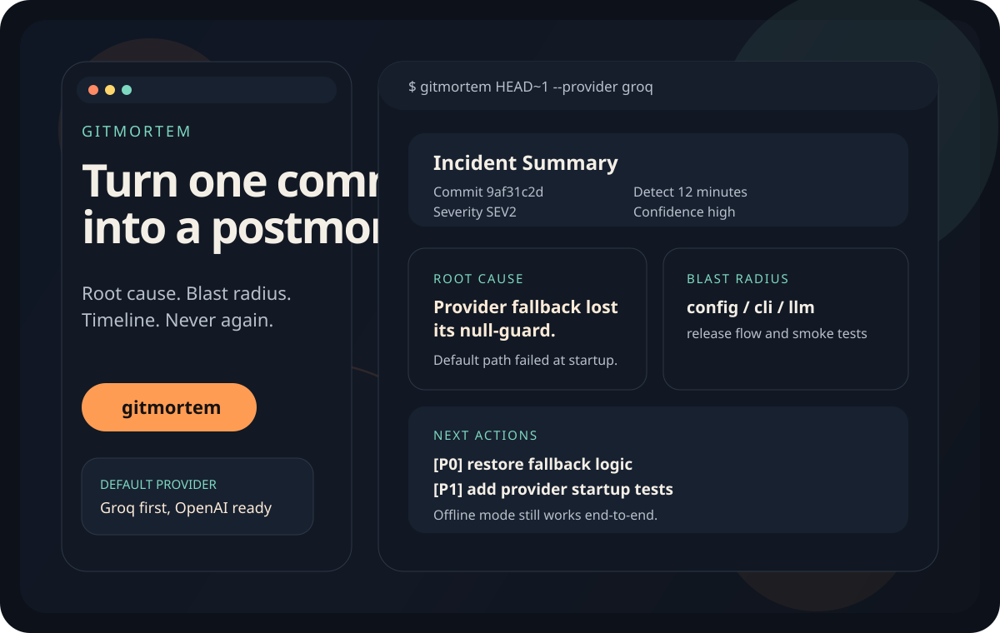
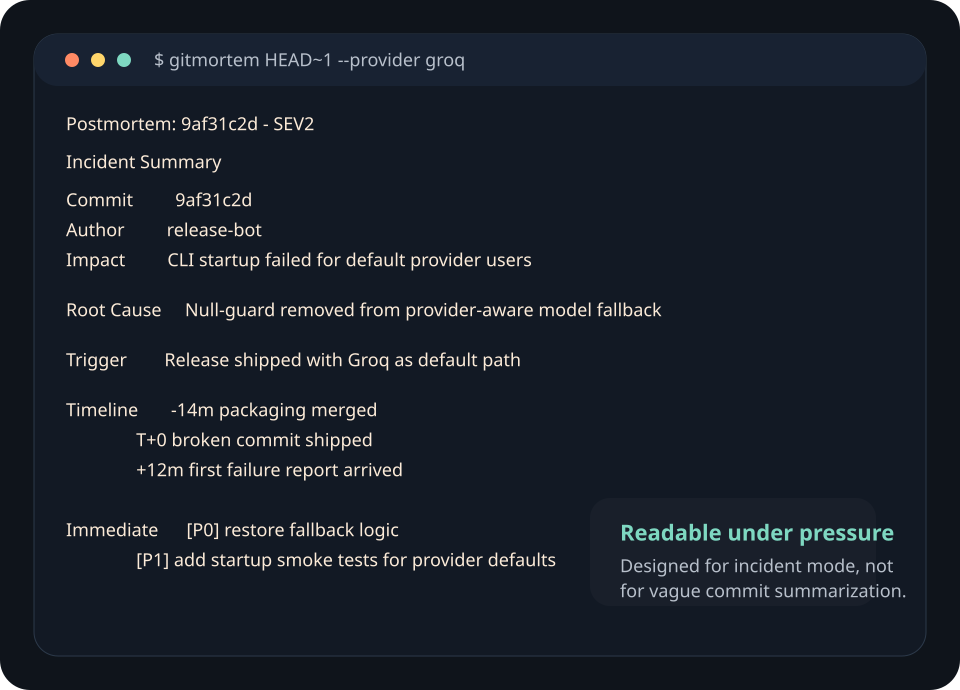
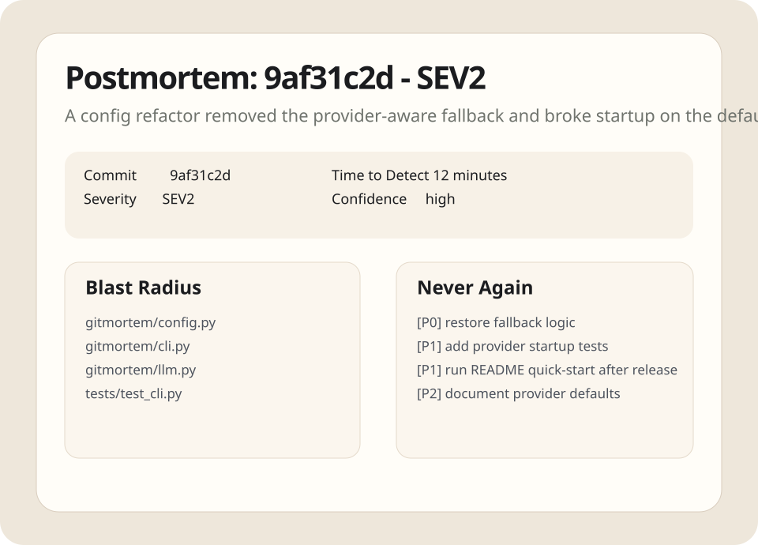

Incident intelligence for suspicious commits
Turn one hash into a postmortem people actually read.
gitmortem takes a commit hash and generates a clean incident
narrative: root cause, blast radius, timeline, severity, and the
never-again checklist. Groq is the default provider, but your team can
swap to OpenAI, Anthropic, OpenRouter, Ollama, or any compatible endpoint.
- Offline mode for pure git facts
- Markdown plus standalone HTML output
- Launch-ready docs, install scripts, and release flow

Install
Pick the path your team will actually use
The Python package is the primary distribution. The bash installer and npm wrapper exist to reduce friction for people who discover the repo first.
python -m pip install git+https://github.com/lekhanpro/gitmortem.git
export GROQ_API_KEY=your_key
gitmortem HEAD~1
The repo is PyPI-ready. After the first tagged publish, this becomes
pip install gitmortem.
curl -fsSL https://raw.githubusercontent.com/lekhanpro/gitmortem/main/install.sh | bash
gitmortem HEAD~1 --no-llmnpm install -g github:lekhanpro/gitmortem
gitmortem HEAD~1The npm package is a thin wrapper that installs and runs the Python CLI. Python 3.10+ still does the actual analysis.
gitmortem HEAD~1 --no-llm -o reports/incident.md --htmlDemo
Fast enough for incident mode, structured enough for follow-through
You need one glance to understand what broke, what else is exposed, and what to fix first. The output is designed for that moment.

Terminal-first experience
Rich output for local incident work, with enough structure to drop directly into chat, docs, or follow-up issues.

Postmortem output that stays readable
Markdown and HTML keep the same information architecture: summary, blast radius, timeline, actions, prevention, detection.
Why it lands
Features that help a repo get used, shared, and starred
Opinionated output
This is not another diff summarizer. The report is shaped like an actual production postmortem with severity, timeline, and prevention work.
Real install paths
Teams can adopt it through pip, a curl bootstrap, or npm wrapper discovery without changing the core Python package.
Provider flexibility
Groq is the default, but the provider layer is not locked in. That lowers switching cost and keeps the tool usable across teams and budgets.
Launch surface included
README, Pages site, sample report, badges, release flow, and CI are all part of the repo instead of afterthoughts.
Providers
Groq by default, not by lock-in
Launch kit